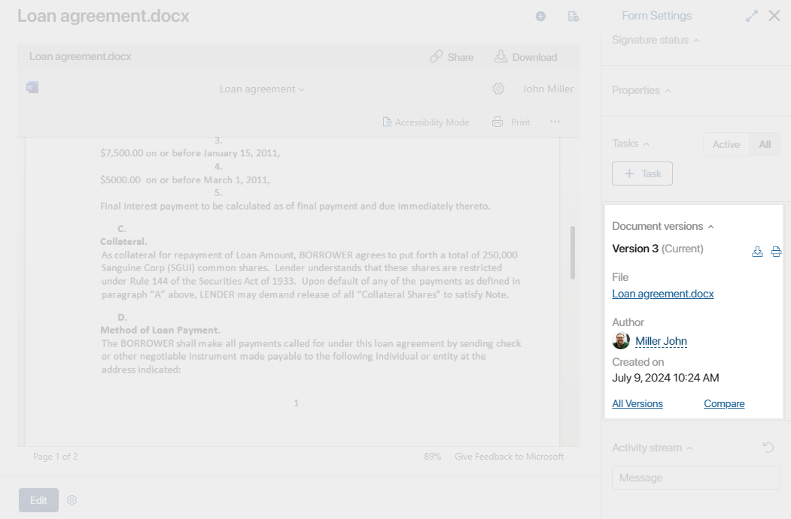
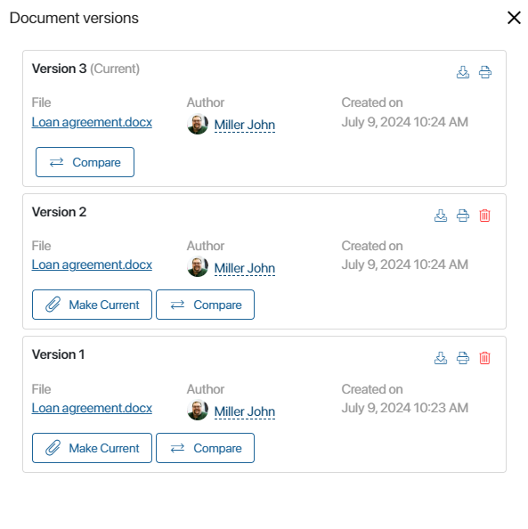
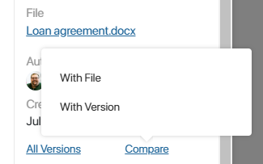
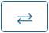
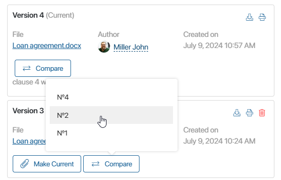
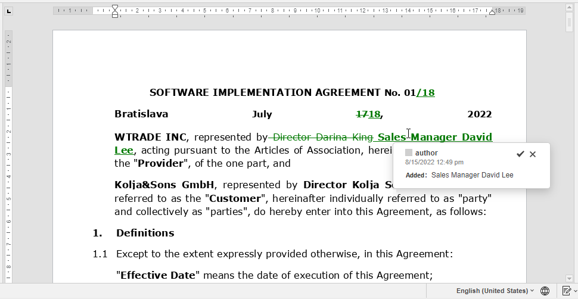

BRIX provides the version control feature. A user can add a new version to a document created in the system, with the previous version marked as outdated.
All versions are shown on the sidebar of the document view page in the Document versions widget. You can view the list, compare the versions, and replace the current version with any of the previous ones.
Please note that version comparison is only available for .doc and .docx files if you have an integration with a file viewing and editing service that allows document comparison.
начало внимание
The administrator can prohibit changing the current version in the settings of the Document versions widget.
конец внимание
Add version
There are several ways to add a new version:
- Click on the button at the top of the document page and upload the new version of the file. If necessary, specify what changes were made in the Comment field.
- Click the Edit button on the document page and modify the file attached to the document.
- Make changes to the document in a business process by using a script. In this case, the new version will be generated automatically.
Information about all added document versions is displayed on the sidebar of the app item.

To see a full list of versions, click on the All Versions link.

Here you can download any version, restore a previous version by clicking the Make Сurrent button next to its name, and compare versions.
Compare versions
начало внимание
Version comparison is only available for .doc and .docx format files, it also requires an integration with a file viewing and editing service that allows document comparison.
конец внимание
If a Document app item contains a .doc or .docx file, you can:
- Compare the current version with one of the older versions or with a newly uploaded file.
- Compare any two versions of the file.
The result will be shown in a new window.
Compare the current version
On the sidebar of the view page, click Compare and select one of the options:

- With File. Upload a file of the same format and click Compare.
- With Version. Select a file version added before, and click Compare.
Compare any two versions
On the sidebar of an item view page, click All Versions. In the pop-up, click  next to the name of the file and select the number of the version for comparison. You can only compare versions of the same format.

Comparison results
The comparison result document is shown in a separate window. All changes are highlighted. For details, hover over the highlighted text.
If you have set up an integration with a file viewing and editing service that allows document comparison, you can edit the document with comparison results and then save it as a new version by clicking Add Version.

The new file will become the current version. It will be displayed in the list of versions on the item’s sidebar.
Note that the Add Version button does not appear if the administrator has prohibited changing the current version of the document in the Document versions widget settings.